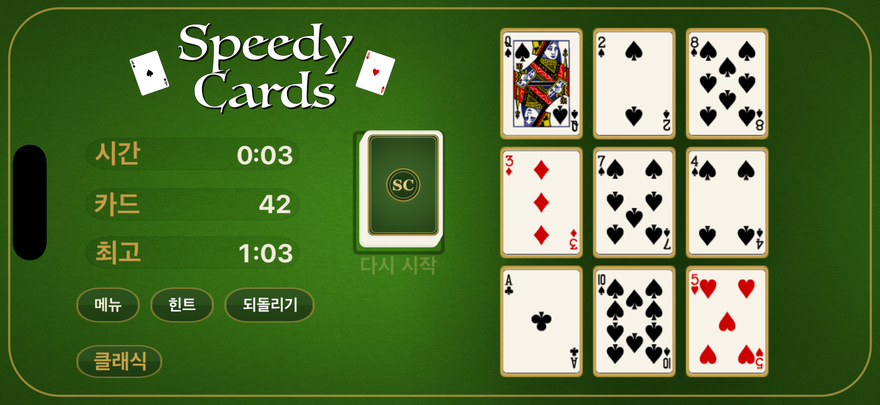
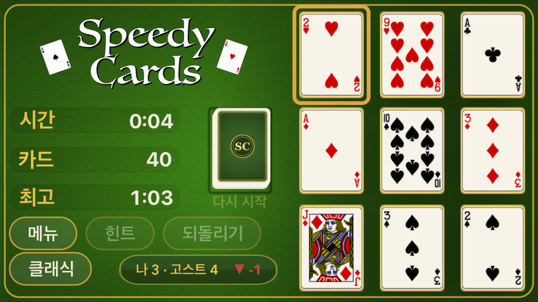
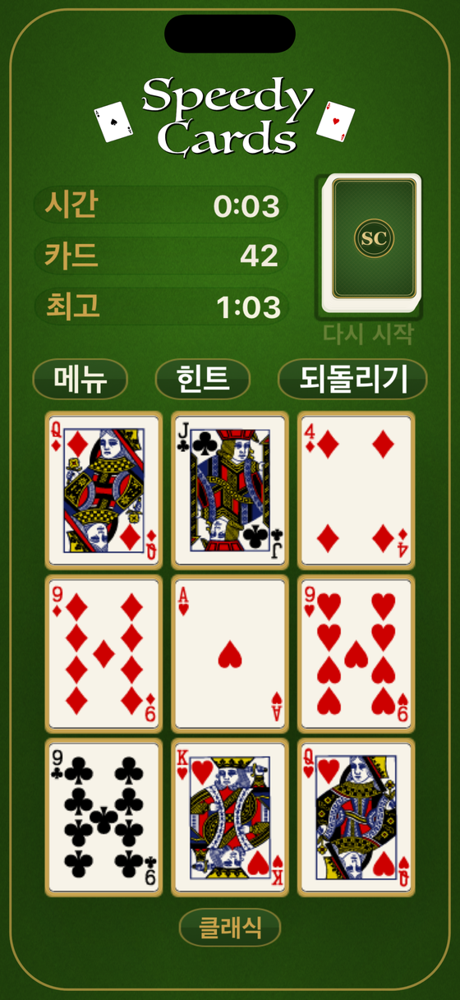

iPhone · iPad · Mac · Apple TV · Apple Watch
생각은 빠르게.
플레이는 더 빠르게.
SpeedyCards는 iPhone, iPad, Mac, Apple TV, Apple Watch를 위한 빠르고 우아한 솔리테어 스타일 카드 레이스입니다. 조합—단독 10, 합이 10인 한 쌍, 또는 잭-퀸-킹—을 찾아 보드를 비우세요. 조합을 치울 때마다 새 카드가 배분되어, 최대한 빠르게 덱 전체를 헤쳐 나갑니다. 시계와, 혹은 같은 카드를 받은 친구와 겨루세요.


조합을 찾아 덱을 비우세요
10 한 장, 합이 10인 두 장, 또는 J·Q·K 세 장을 찾아 판을 비웁니다. 조합을 하나 치울 때마다 덱에서 새 카드가 깔리니, 빨리 찾을수록 판은 더 빨리 비워집니다.
조합은 셋, 한눈에
혼자인 10, 합이 10인 두 장, 그림 카드 셋. 규칙은 이게 전부이고, 다시 생각할 일도 없습니다.
치울 때마다 더 깔립니다
혼자인 10은 한 장, 두 장짜리 쌍은 두 장, 그림 카드 셋은 세 장을 깝니다 — 치울수록 판에 카드가 채워지며 덱을 끝까지 파고듭니다.
무엇과든 겨루세요
시계, 오늘의 판, 아니면 똑같이 섞인 판을 받은 친구.
같은 셔플, 두 사람 모두
대결에서는 두 사람에게 완전히 같은 카드가 깔립니다. 다른 것은 무엇을 봤는지와 얼마나 빨랐는지뿐입니다. 초대 링크나 짧은 코드를 아무 메신저로 보내고 상대의 기록과 겨루세요.
계정도, 가입도, 사이에 낀 저희 서버도 없습니다 — 도전장이 곧 코드입니다.
다시 열게 되는 이유
전 세계 하나의 데일리
매일 모두가 같은 판으로 시작합니다. 연속 기록은 이어지고, 사정이 있는 날을 위한 프리즈도 얻을 수 있습니다.
주간 Gauntlet
Game Center에서 매주 열리는 토너먼트.
서른 개의 업적, 브라스 앨범
테이블 다섯 가지, 구입이 아니라 플레이로 얻습니다. 이기든 지든 매 판 오르는 테이블 랭크와 함께.
다섯 플랫폼, 하나의 게임
게임 하나를 한 번 구매하면 가지고 계신 모든 Apple 기기에서 똑같이 즐길 수 있습니다. 연속 기록과 진행은 이용자 본인의 iCloud를 통해 따라오며, 저희는 읽을 수 없습니다.

어디에 있든, 같은 판
휴대폰에서는 세로로, Mac에서는 가로로, TV에서는 방 건너에서, Apple Watch에서는 한눈에. 같은 판, 같은 규칙, 같은 자기 기록 도전입니다.
플레이어를 위한 안내
광고 없음. 추적 없음. 계정 없음. 아무것도 수집하지 않고, 아무것도 팔지 않으며, 이용자를 지켜보는 광고 SDK도 없습니다. Game Center는 선택 사항이며 Apple의 것입니다. 모두 한 번만 구입하면 되고, 갱신되는 것은 없습니다.
게임은 11개 언어를 지원합니다: 한국어, 영어, 독일어, 프랑스어, 스페인어, 이탈리아어, 포르투갈어, 일본어, 그리스어, 우크라이나어, 러시아어.
SpeedyCards
무료로 플레이, 한 번의 구입으로 전체 해제. Apple의 다섯 플랫폼, 11개 언어, 계정 불필요.